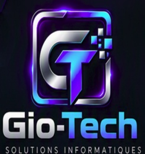

Support aux utilisateurs
Accompagnement et dépannage pour vous aider à retrouver un environnement informatique fonctionnel.
Discutons de vos besoins ↗
Des solutions informatiques, simplement.
VOTRE PARTENAIRE TECHNOLOGIQUE
Un support informatique fiable à Québec pour les particuliers et les PME. Dépannage, Microsoft 365, réseaux, sécurité et création de sites Web.
CE QUE NOUS FAISONS
Nous accompagnons nos clients dans plusieurs domaines : support aux utilisateurs, installations et configurations d'équipements, maintenance informatique, sauvegarde et récupération de données, Microsoft 365, réseaux et connectivité ainsi que création de sites Web. Chaque intervention est réalisée avec une approche personnalisée afin de répondre aux objectifs et au budget de chaque client.
Basée à Québec, GIO-TECH met l'accent sur la proximité, la simplicité et la qualité du service. Nous privilégions des solutions durables qui favorisent la stabilité, la sécurité et la performance de vos équipements informatiques.
Que ce soit pour régler un problème, optimiser votre équipement ou développer votre présence en ligne, Gio-Tech est là pour vous aider.
Accompagnement et dépannage pour vous aider à retrouver un environnement informatique fonctionnel.
Discutons de vos besoins ↗Installation et configuration d'ordinateurs et de logiciels pour un démarrage simple et efficace.
Discutons de vos besoins ↗Entretien et optimisation de vos équipements pour favoriser leur stabilité et leur performance.
Discutons de vos besoins ↗Solutions de sauvegarde et aide à la récupération de données selon votre situation.
Discutons de vos besoins ↗Aide à la mise en place et à la configuration des outils Microsoft 365 pour mieux collaborer.
Discutons de vos besoins ↗Configuration et dépannage de vos connexions et équipements réseau.
Discutons de vos besoins ↗Une présence en ligne claire et professionnelle pour présenter votre activité et faciliter les prises de contact.
Parlons de votre site ↗L'INFORMATIQUE SANS COMPLICATION
Un problème informatique ne devrait pas ralentir vos activités. Gio-Tech met l'accent sur des solutions pratiques, une communication claire et un accompagnement adapté à vos besoins.
PRÊT À PASSER À L'ACTION ?
ENTRONS EN CONTACT
Décrivez-nous brièvement votre besoin. Nous serons heureux d'en discuter avec vous.